Milpa maya y apicultura-Final¶
Meta¶
Promover el fortalecimiento del sistema milpa maya tradicional y de la apicultura del Estado de Yucatán, para que la producción se realice de manera sustentable, promueva la conservación de la biodiversidad y del patrimonio biocultural y permita la innovación en la milpa maya, sin perder su esencia tradicional.
1. Milpa maya¶
Sistema alimentario agroforestal dinámico, integrado por diversas actividades productivas a pequeña escala, asociadas a la seguridad alimentaria por ser principalmente para autoconsumo.
1.1 Modelo de decisión¶
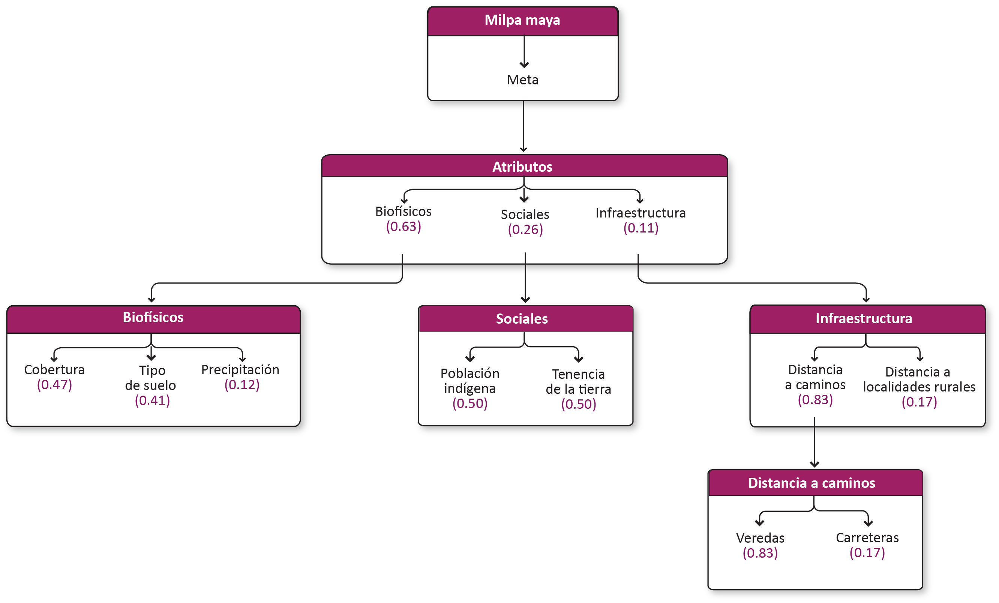
1.2 Atributos¶
1.2.1 Biofísicos¶
| Atributo | Definición |
|---|---|
| Cobertura | Vegetación o uso de suelo actual |
| Tipo de suelo | Tipo de suelo (Edafología) |
| Precipitación | Precipitación promedio de mayo, junio y julio. |
1.2.1.1 Cobertura¶
Vegetación o uso de suelo actual.
Insumos
| Campo | Uso del suelo y vegetación |
|---|---|
| Fuente | [1] Conjunto de datos vectoriales de la carta de Uso del suelo y vegetación. Serie VI. Conjunto Nacional INEGI y [2] Mapa de uso del suelo y vegetación de la zona costera asociada a los manglares, Región Península de Yucatán CONABIO |
| Año | [1] 2017; [2] 2021 |
| Campo | [1] descripcio; [2] Descrip |
| Escala | [1] 1:250,000; [2] 1:50,000 |
| Unidades | Adimensional |
Parámetros de la función de valor
| ID | Categoria | Importancia | FV |
|---|---|---|---|
| 3 | Agricultura de temporal | Muy alta | 1.00 |
| 9 | Selva baja | Muy alta | 1.00 |
| 10 | Selva mediana | Muy alta | 1.00 |
| 2 | Agricultura de riego | Baja | 0.25 |
| 8 | Pastizal | Baja | 0.25 |
| 11 | Sin vegetación | Baja | 0.25 |
| 1 | Acuícola | Nula | 0.00 |
| 4 | Asentamiento humano | Nula | 0.00 |
| 5 | Bosque cultivado/Palmar inducido | Nula | 0.00 |
| 6 | Cuerpo de agua | Nula | 0.00 |
| 7 | Manglar | Nula | 0.00 |
| 12 | Sabana | Nula | 0.00 |
| 13 | Tular | Nula | 0.00 |
| 14 | Vegetación de duna costera | Nula | 0.00 |
| 15 | Vegetación de petén | Nula | 0.00 |
| 16 | Vegetación halófila hidrófila | Nula | 0.00 |
| 17 | ND | Nula | 0.00 |
Función de valor de cobertura
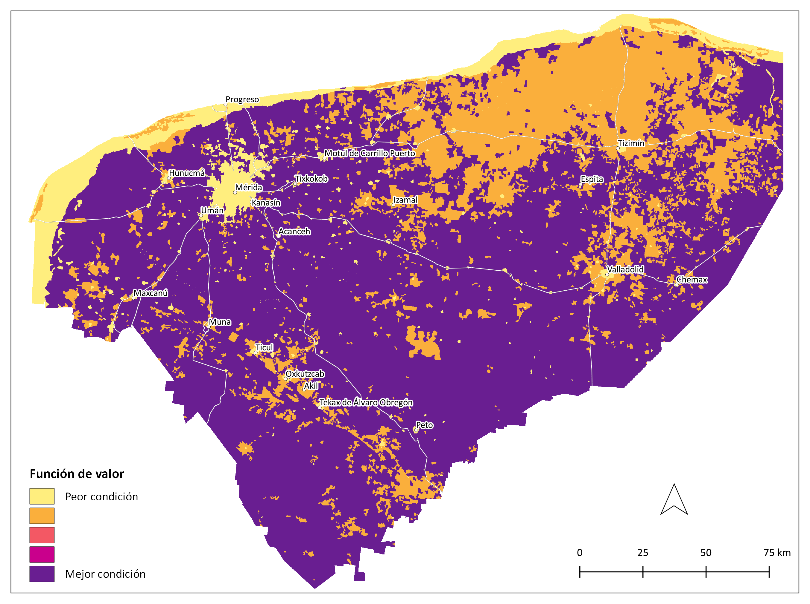
1.2.1.2 Tipo de suelo¶
Tipo de suelo (Edafología).
Insumos
| Capa | Edafología |
|---|---|
| Fuente | Conjunto de datos vectoriales edafológico. Serie II (Continuo Nacional) INEGI |
| Año | 2014 |
| Campo | tipo_suelo |
| Escala | 1:250,000 |
| Unidades | Adimensional |
Parámetros de la función de valor
| ID | Categoría | Importancia | FV |
|---|---|---|---|
| 2 | Cambisol | Muy alta | 1.00 |
| 3 | Chernozem | Muy alta | 1.00 |
| 7 | Luvisol | Muy alta | 1.00 |
| 8 | Nitosol | Muy alta | 1.00 |
| 9 | Phaeozem | Muy alta | 1.00 |
| 6 | Leptosol | Alta | 0.75 |
| 12 | Vertisol | Moderada | 0.50 |
| 4 | Gleysol | Baja | 0.25 |
| 5 | Histosol | Baja | 0.25 |
| 10 | Regosol | Baja | 0.25 |
| 1 | Arenosol | Nula | 0.00 |
| 11 | Solonchak | Nula | 0.00 |
| 13 | No aplica | Nula | 0.00 |
Función de valor de tipo de suelo
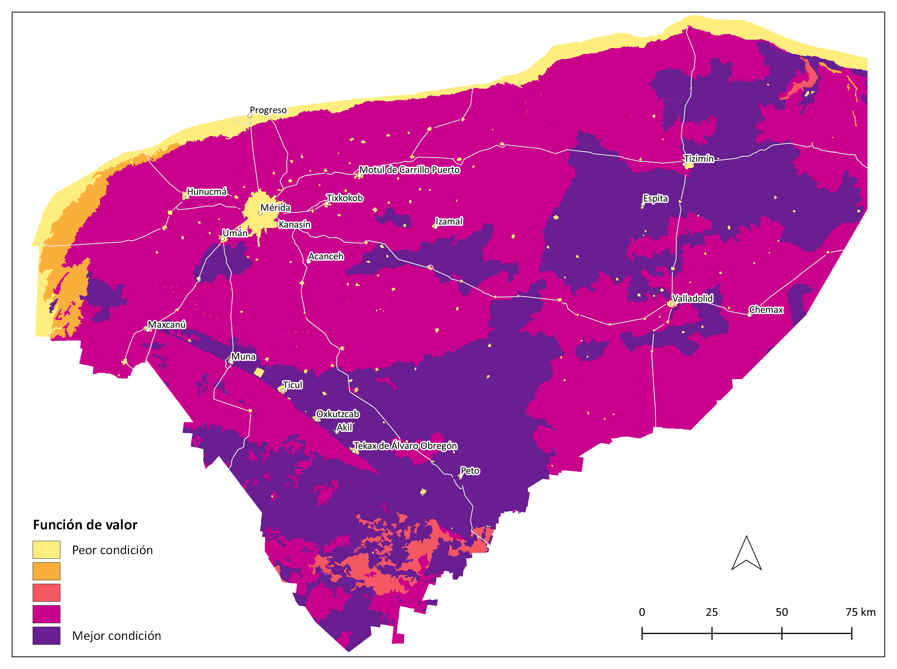
1.2.1.3 Precipitación¶
Precipitación promedio de mayo, junio y julio.
| Atributo | Definición |
|---|---|
| Precipitación | Precipitación promedio de los meses de mayo, junio y julio (meses de inicio de siembra de la milpa). |
1.2.1.3.1 Precipitación¶
Precipitación promedio de mayo, junio y julio.
Insumos
| Capa | Precipitación promedio de mayo, junio y julio |
|---|---|
| Fuente | Adaptado de: Precipitación mensual, periodo: 2000 (1980-2009) Instituto de Biología, UNAM |
| Año | 2019 |
| Resolución | 1000 m x 1000 m |
| Unidades | Milímetros |
Parámetros de la función de valor
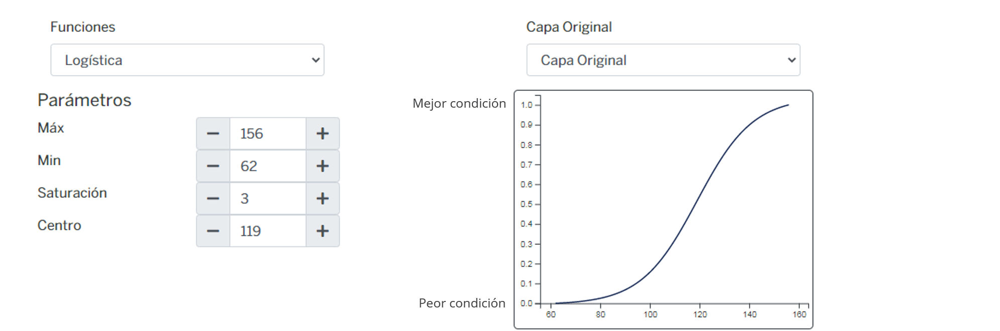
Función de valor de precipitación
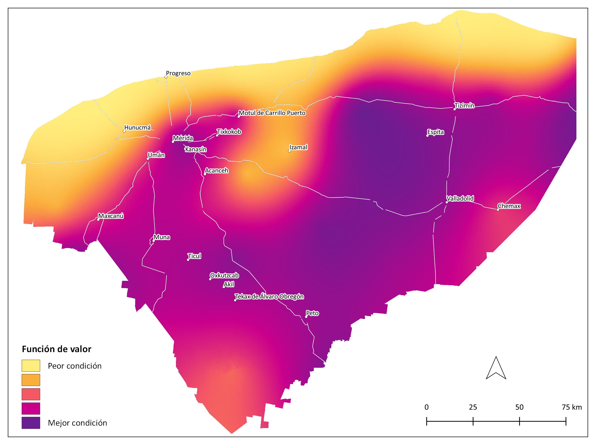
1.2.3 Infraestructura¶
| Atributo | Definición |
|---|---|
| Distancia a caminos | Distancia a caminos principales, brechas, terracerías |
| Distancia a localidades rurales | Distancia a localidades rurales (<2,500 habitantes) como centros de vivienda, fuentes de acceso a insumos, a centros de acopio y comercio. |
1.2.3.1 Distancia a caminos¶
Distancia a caminos principales, brechas, terracerías.
| Atributo | Definición |
|---|---|
| Veredas | Distancia a caminos y veredas. |
| Carreteras | Distancia a carreteras y prolongación. |
1.2.3.1.1 Veredas¶
Distancia a caminos y veredas.
Insumos
| Capa | Distancia a veredas y caminos |
|---|---|
| Fuente | Red Nacional de Caminos (RNC) Red vial - INEGI |
| Año | 2019 |
| Campo | TIPO_VIAL |
| Escala | Sin dato |
| Unidades | Kilómetros |
Parámetros de la función de valor
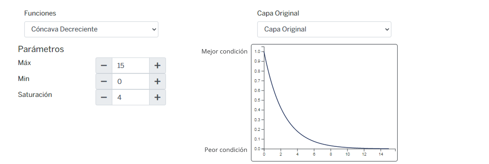
Función de valor de veredas
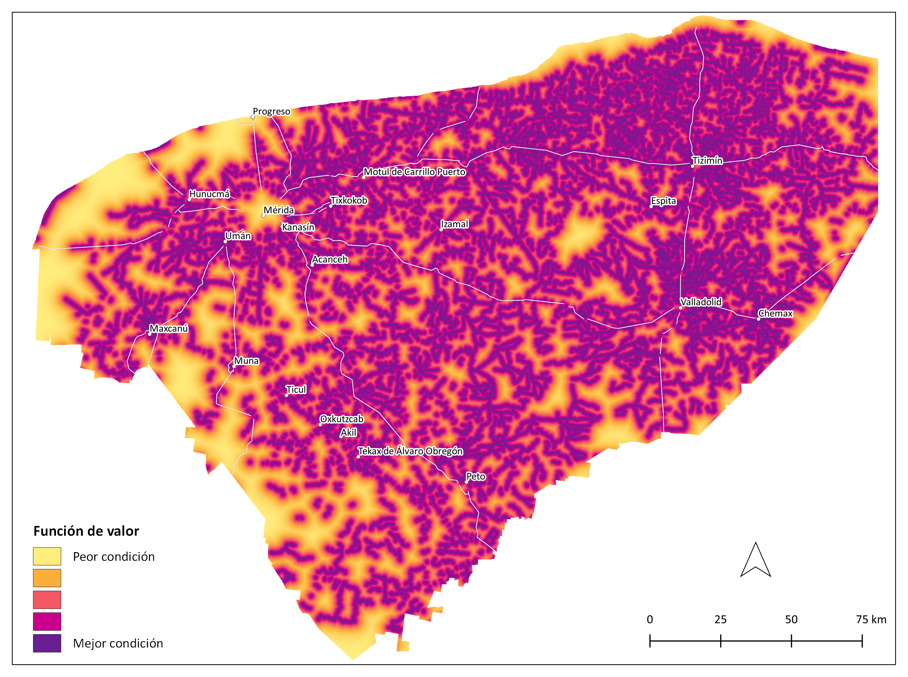
1.2.3.1.2 Carreteras¶
Distancia a carreteras y prolongación.
Insumos
| Capa | Distancia a carreteras y prolongaciones |
|---|---|
| Fuente | Red Nacional de Caminos (RNC) Red vial - INEGI |
| Año | 2019 |
| Campo | TIPO_VIAL |
| Escala | Sin dato |
| Unidades | Kilómetros |
Parámetros de la función de valor
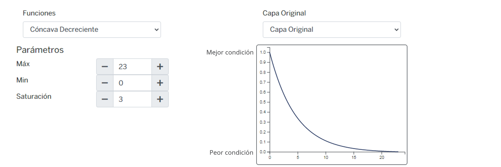
Función de valor de carreteras
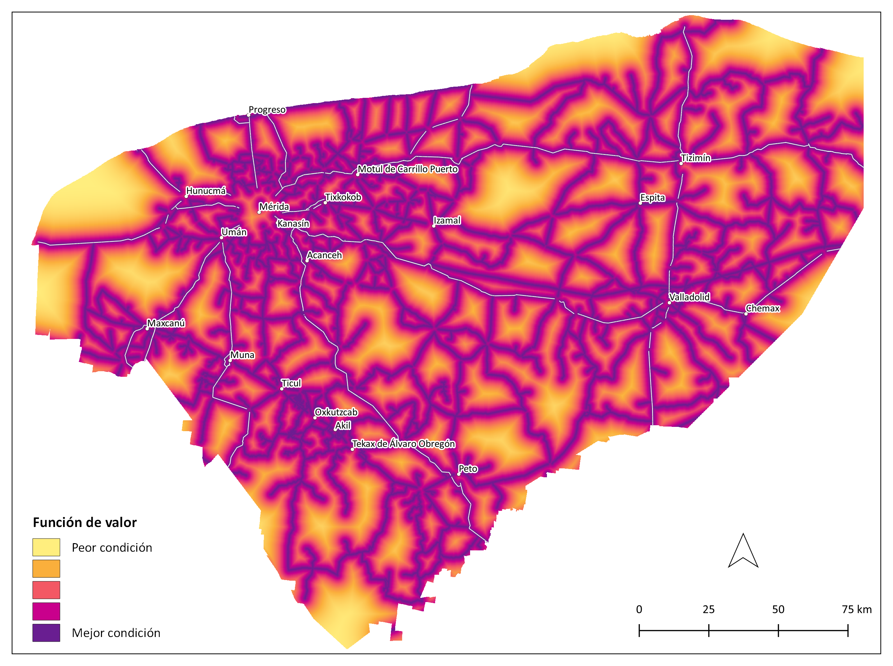
1.2.3.2 Distancia a localidades rurales¶
Distancia a localidades rurales (<2,500 habitantes) como centros de vivienda, fuentes de acceso a insumos, a centros de acopio y comercio.
Insumos
| Capa | Distancia a localidades rurales (menos de 2,500 habitantes) |
|---|---|
| Fuente | [1] Polígonos de localidades. Marco Geoestadístico. Censo de Población y Vivienda INEGI y [2] Datos de indicador. Censo de Población y Vivienda. Principales resultados por localidad (ITER) INEGI |
| Año | 2020 |
| Campo | [2] POBTOT |
| Escala | Localidad |
| Unidades | Kilómetros |
Parámetros de la función de valor
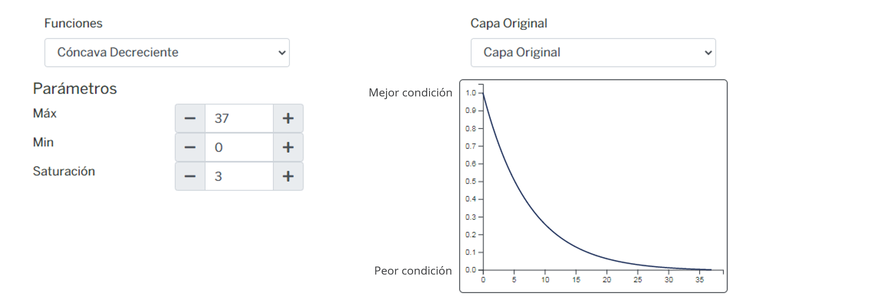
Función de valor de distancia a localidades rurales
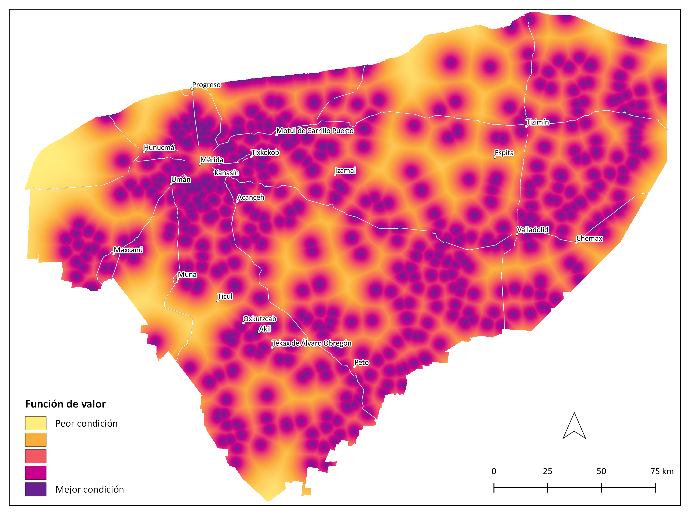
1.3 Mapa de aptitud¶
1.3.1 Zonas de aprovechamiento actual de milpa maya¶
Insumos
| Capa | Milpa de subsistencia |
|---|---|
| Fuente | Mapa de distribución de las áreas de milpa de subsistencia y mecanizada SEDUMA con información de Ellis, E. Romero, A. Hernández, I. |
| Año | 2015 |
| Escala | Sin dato |
| Unidades | Adimensional |
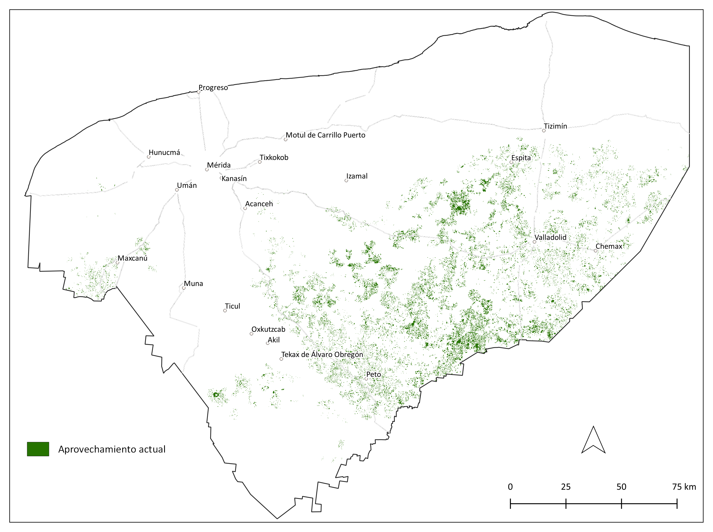
1.3.2 Zona de exclusión¶
Insumos
| Capa | Uso de suelo y vegetación y localidades con 2,500 habitantes o más |
|---|---|
| Fuente | [1] Conjunto de datos vectoriales de la carta de Uso del suelo y vegetación. Serie VI. Conjunto Nacional INEGI, [2] Mapa de uso del suelo y vegetación de la zona costera asociada a los manglares, Región Península de Yucatán CONABIO y [3] Polígonos de localidades. Marco Geoestadístico. Censo de Población y Vivienda INEGI |
| Año | [1] 2017; [2] 2021; [3] 2020 |
| Campo | [1] descripcio; [2] Descrip |
| Escala | [1] 1:250,000; [2] 1:50,000; [3] Sin dato |
| Unidades | Adimensional |
Tabla de exclusión de milpa maya
[1]
| ID | Categoría |
|---|---|
| 1 | Acuícola |
| 5 | Bosque cultivado/Palmar inducido |
| 6 | Cuerpo de agua |
| 7 | Manglar |
| 12 | Sabana |
| 13 | Tular |
| 14 | Vegetación de duna costera |
| 15 | Vegetación de petén |
| 16 | Vegetación halófila hidrófila |
| 17 | ND |
[2] Se seleccionaron las localidades con 2,500 habitantes o más.
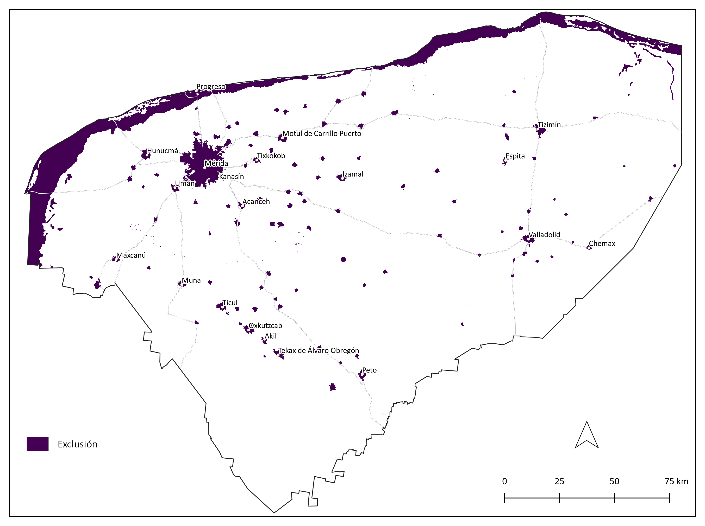
1.3.3 Mapa de aptitud de milpa maya¶
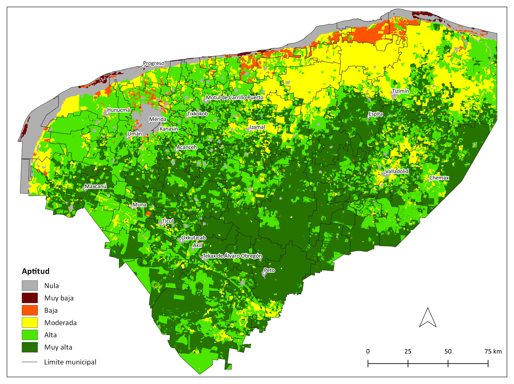
Pesos globales de los atributos ambientales de milpa maya
| Criterio | Peso |
|---|---|
| Cobertura | 0.297 |
| Tipo de suelo | 0.258 |
| Tenencia de la tierra | 0.130 |
| Población indígena | 0.130 |
| Precipitación | 0.079 |
| Veredas | 0.073 |
| Distancia a localidades rurales | 0.018 |
| Carreteras | 0.015 |
Área por categoría de aptitud
| Categoría | km² | Porcentaje del estado |
|---|---|---|
| Muy alta | 16587.0 | 42 |
| Alta | 12816.3 | 32 |
| Moderada | 6636.7 | 17 |
| Baja | 785.0 | 2 |
| Muy baja | 59.0 | 0 |
| Nula | 2652.6 | 7 |
1.3.4 Sensibilidad de atributos ambientales de milpa maya¶
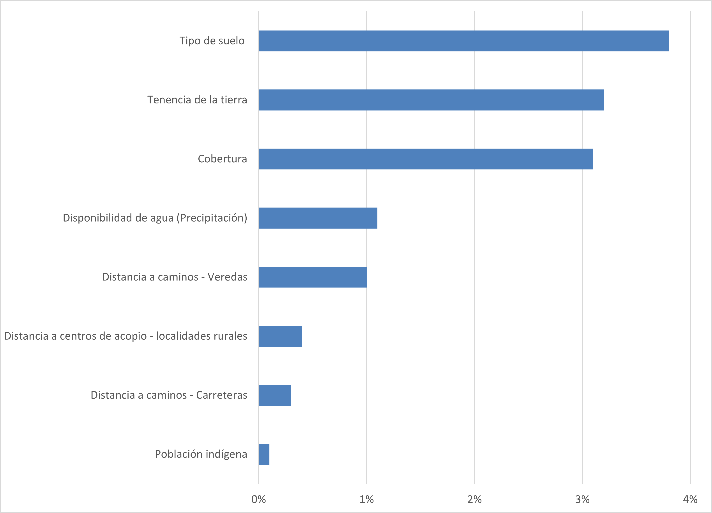
2. Apicultura¶
2.1 Modelo de decisión¶
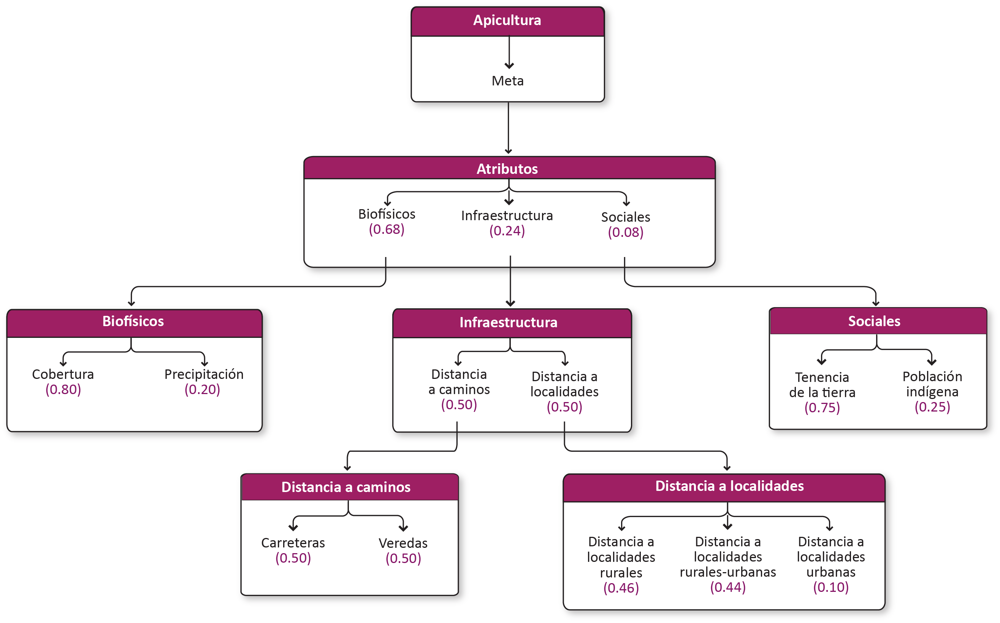
2.2 Atributos¶
2.2.1 Biofísicos¶
| Atributo | Definición |
|---|---|
| Cobertura | Vegetación o uso de suelo actual |
| Precipitación | Precipitación de marzo (estiaje) |
2.2.1.1 Cobertura¶
Vegetación o uso de suelo actual.
Insumos
| Campo | Uso del suelo y vegetación |
|---|---|
| Fuente | [1] Conjunto de datos vectoriales de la carta de Uso del suelo y vegetación. Serie VI. Conjunto Nacional INEGI y [2] Mapa de uso del suelo y vegetación de la zona costera asociada a los manglares, Región Península de Yucatán CONABIO |
| Año | [1] 2017; [2] 2021 |
| Campo | [1] descripcio; [2] Descrip |
| Escala | [1] 1:250,000; [2] 1:50,000 |
| Unidades | Adimensional |
Parámetros de la función de valor
| ID | Categoría | Importancia | FV |
|---|---|---|---|
| 3 | Agricultura de temporal | Muy alta | 1.00 |
| 9 | Selva baja | Muy alta | 1.00 |
| 10 | Selva mediana | Muy alta | 1.00 |
| 13 | Tular | Alta | 0.75 |
| 5 | Bosque cultivado/Palmar inducido | Moderada | 0.50 |
| 12 | Sabana | Moderada | 0.50 |
| 14 | Vegetación de duna costera | Moderada | 0.50 |
| 15 | Vegetación de petén | Moderada | 0.50 |
| 2 | Agricultura de riego | Baja | 0.25 |
| 7 | Manglar | Baja | 0.25 |
| 8 | Pastizal | Baja | 0.25 |
| 11 | Sin vegetación | Baja | 0.25 |
| 1 | Acuícola | Nula | 0.00 |
| 4 | Asentamiento humano | Nula | 0.00 |
| 6 | Cuerpo de agua | Nula | 0.00 |
| 16 | Vegetación halófila hidrófila | Nula | 0.00 |
| 17 | ND | Nula | 0.00 |
Función de valor de cobertura
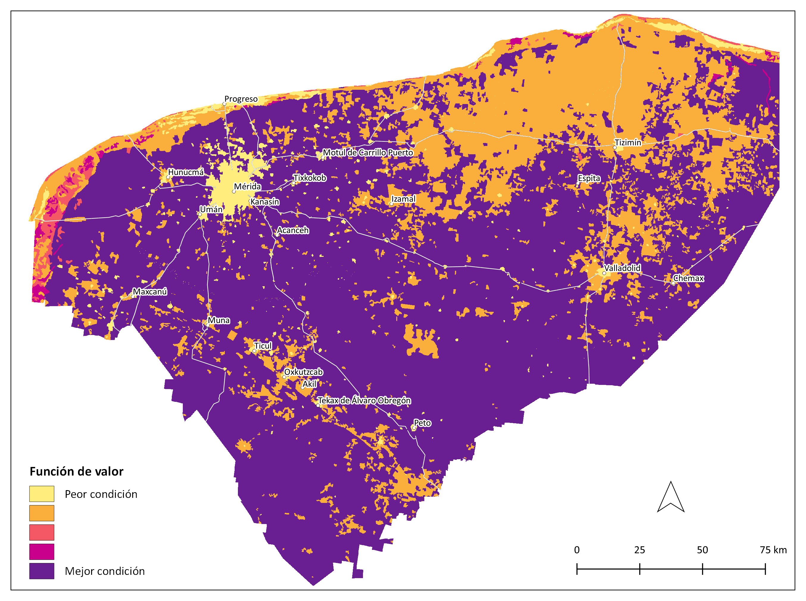
2.2.1.2 Precipitación¶
Precipitación promedio del mes de marzo (temporada de estiaje).
Insumos
| Capa | Precipitación promedio de marzo |
|---|---|
| Fuente | Precipitación mensual, periodo: 2000 (1980-2009) Instituto de Biología, UNAM |
| Año | 2019 |
| Resolución | 1000 m x 1000 m |
| Unidades | Milímetros |
Parámetros de la función de valor
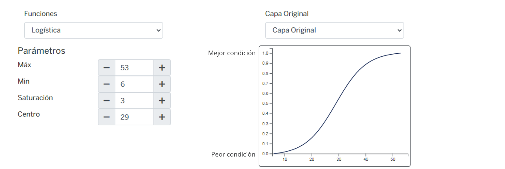
Función de valor de precipitación
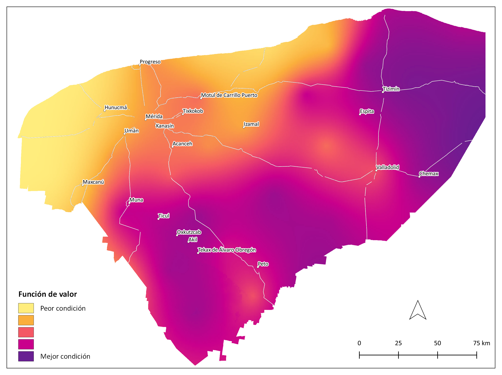
2.2.2 Infraestructura¶
| Atributo | Definición |
|---|---|
| Distancia a caminos | Distancia a caminos principales, brechas, terracerías |
| Distancia a localidades | Distancia a poblaciones para el acceso a insumos, recursos, herramientas y centros de acopio. Existencia de grupos organizados de mercado. |
2.2.2.1 Distancia a caminos¶
Distancia a caminos principales, brechas, terracerías.
| Atributo | Definición |
|---|---|
| Carreteras | Distancia a carreteras y prolongación |
| Veredas | Distancia a caminos y veredas. |
2.2.2.1.1 Carreteras¶
Distancia a carreteras y prolongación.
Insumos
| Capa | Distancia a carreteras y prolongaciones |
|---|---|
| Fuente | Red Nacional de Caminos (RNC) Red vial - INEGI |
| Año | 2019 |
| Campo | TIPO_VIAL |
| Escala | Sin dato |
| Unidades | Kilómetros |
Parámetros de la función de valor

Función de valor de carreteras
2.2.2.1.2 Veredas¶
Distancia a caminos y veredas.
Insumos
| Capa | Distancia a veredas y caminos |
|---|---|
| Fuente | Red Nacional de Caminos (RNC) Red vial - INEGI |
| Año | 2019 |
| Campo | TIPO_VIAL |
| Escala | Sin dato |
| Unidades | Kilómetros |
Parámetros de la función de valor
Función de valor de veredas

2.2.2.2 Distancia a localidades¶
Distancia a poblaciones para el acceso a insumos, recursos, herramientas y centros de acopio. Existencia de grupos organizados de mercado.
| Atributo | Definición |
|---|---|
| Distancia a localidades rurales | Distancia localidades rurales < 2,500 habitantes. |
| Distancia a localidades rurales-urbanas | Distancia a localidades rurales-urbanas => 2500 y <15,000 habitantes. |
| Distancia a localidades urbanas | Distancia a localidades urbanas >= 15,000 habitantes. |
2.2.2.2.1 Distancia a localidades rurales¶
Distancia localidades rurales < 2,500 habitantes.
Insumos
| Capa | Distancia a localidades rurales (menos de 2,500 habitantes) |
|---|---|
| Fuente | [1] Polígonos de localidades. Marco Geoestadístico. Censo de Población y Vivienda INEGI y [2] Datos de indicador. Censo de Población y Vivienda. Principales resultados por localidad (ITER) INEGI |
| Año | 2020 |
| Campo | [2] POBTOT |
| Escala | Localidad |
| Unidades | Kilómetros |
Parámetros de la función de valor
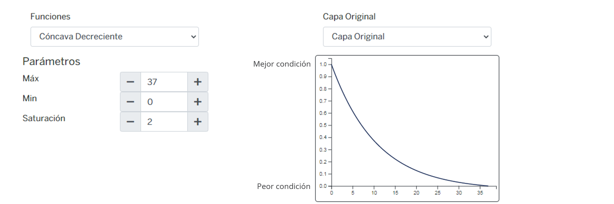
Función de valor de distancia a localidades rurales
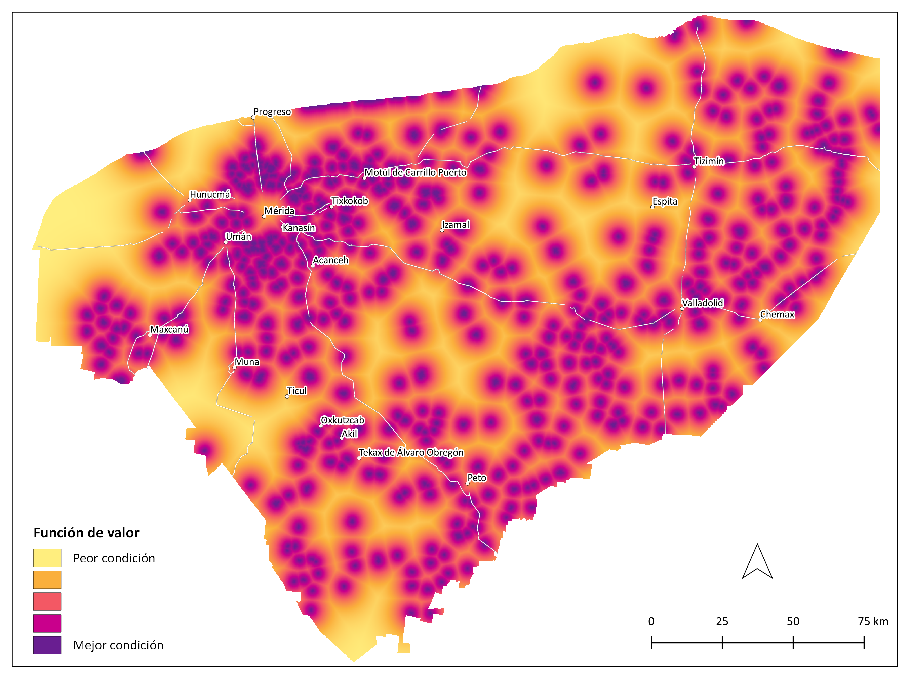
2.2.2.2.2 Distancia a localidades rurales-urbanas¶
Insumos
Distancia a localidades rurales-urbanas => 2500 y <15,000 habitantes.
| Capa | Distancia a localidades rurales - urbanas (entre 2,500 y 15,000 habitantes) |
|---|---|
| Fuente | [1] Polígonos de localidades. Marco Geoestadístico. Censo de Población y Vivienda INEGI y [2] Datos de indicador. Censo de Población y Vivienda. Principales resultados por localidad (ITER) INEGI |
| Año | 2020 |
| Campo | [2] POBTOT |
| Escala | Localidad |
| Unidades | Kilómetros |
Parámetros de la función de valor
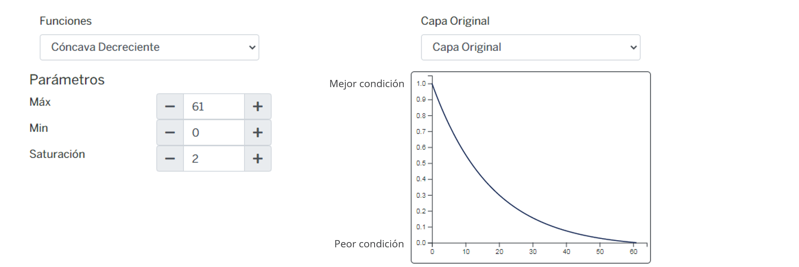
Función de valor de distancia a localidades rurales-urbanas
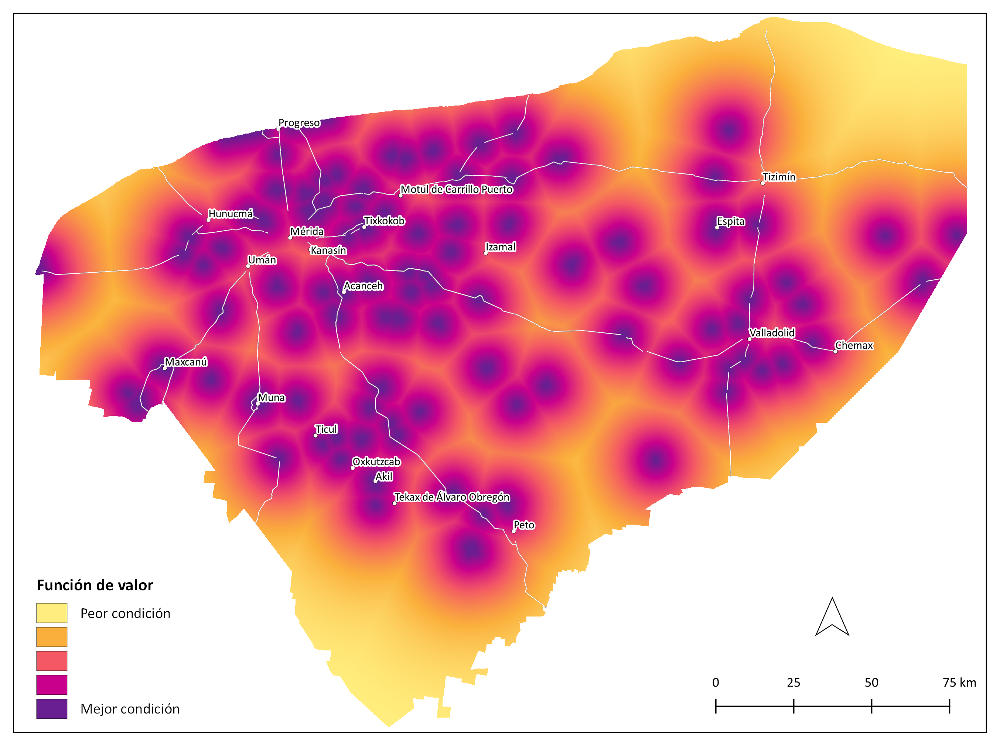
2.2.2.2.3 Distancia a localidades urbanas¶
Distancia a localidades urbanas >= 15,000 habitantes.
Insumos
| Capa | Distancia a localidades urbanas (mayor o igual a 15,000 habitantes) |
|---|---|
| Fuente | [1] Polígonos de localidades. Marco Geoestadístico. Censo de Población y Vivienda INEGI y [2] Datos de indicador. Censo de Población y Vivienda. Principales resultados por localidad (ITER) INEGI |
| Año | 2020 |
| Campo | [2] POBTOT |
| Escala | Localidad |
| Unidades | Kilómetros |
Parámetros de la función de valor
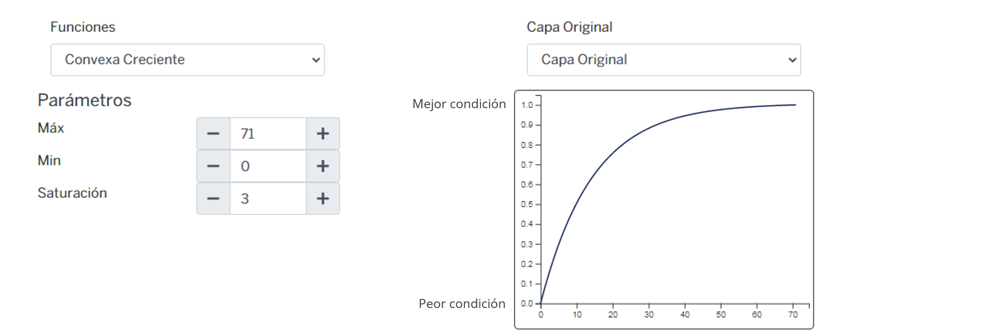
Función de valor de distancia a localidades urbanas
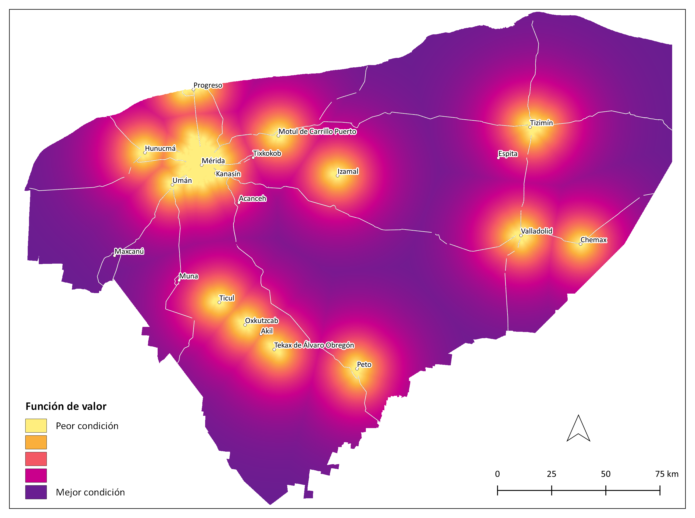
2.2.3 Sociales¶
| Atributo | Definición |
|---|---|
| Tenencia de la tierra | Zonas de área común, parcelas y áreas no ejidales. |
| Población indígena | Porcentaje de la población de 3 años y más que habla una lengua indígena en el municipio. |
2.2.3.1 Tenencia de la tierra¶
Zonas de área común, parcelas y áreas no ejidales.
Insumos
| Capa | Tenencia de la tierra |
|---|---|
| Fuente | [1] Zonas de Tierras Parceladas RAN y [2] Tierra de uso común RAN |
| Año | 2020 |
| Escala | Sin dato |
| Unidades | Adimensional |
Parámetros de la función de valor
| ID | Categoría | Importancia | FV |
|---|---|---|---|
| 1 | Tierra de uso común | Muy alta | 1.00 |
| 2 | Zona de tierras parceladas | Moderada | 0.50 |
| 3 | No ejidal | Baja | 0.25 |
Función de valor de tenencia de la tierra
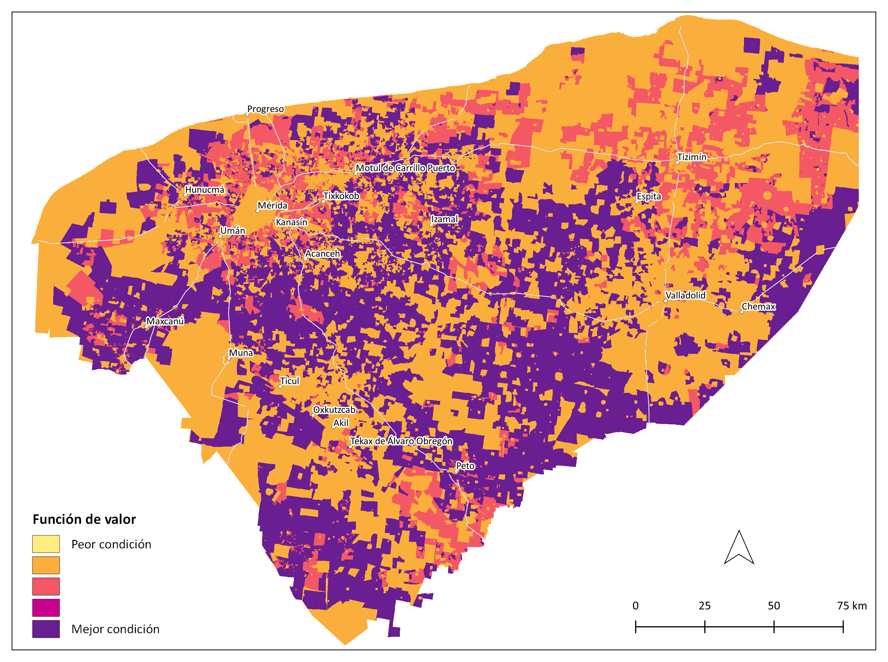
2.2.3.2 Población indígena¶
Porcentaje de la población de 3 años y más que habla una lengua indígena en el municipio.
Insumos
| Capa | Población indígena |
|---|---|
| Fuente | [1] Polígonos de municipios. División política municipal INEGI y [2] Datos de indicador. Censo de Población y Vivienda INEGI |
| Año | [1] 2018 y [2] 2020 |
| Campo | [2] POBTOT y P3YM_HLI |
| Escala | Municipal |
| Unidades | Porcentaje |
Parámetros de la función de valor
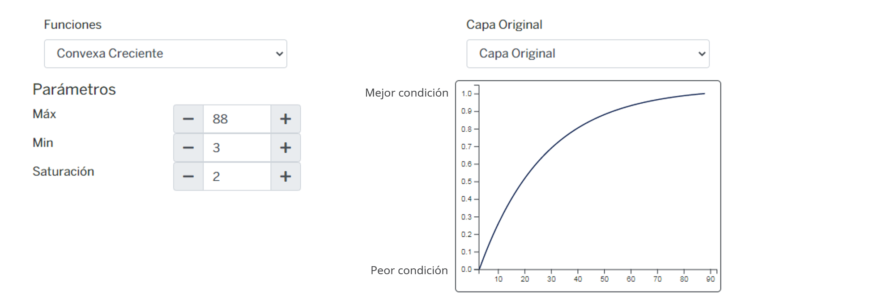
Función de valor de población indígena
2.3 Mapa de aptitud¶
2.3.1 Zonas de aprovechamiento actual de apicultura¶
Insumos
| Capa | Apiarios |
|---|---|
| Fuente | Apiarios producción de miel SEDUMA con datos del Registro y Credencialización Apícola. Secretaría de Desarrollo Rural |
| Año | 2005 |
| Escala | Sin dato |
| Unidades | Adimensional |
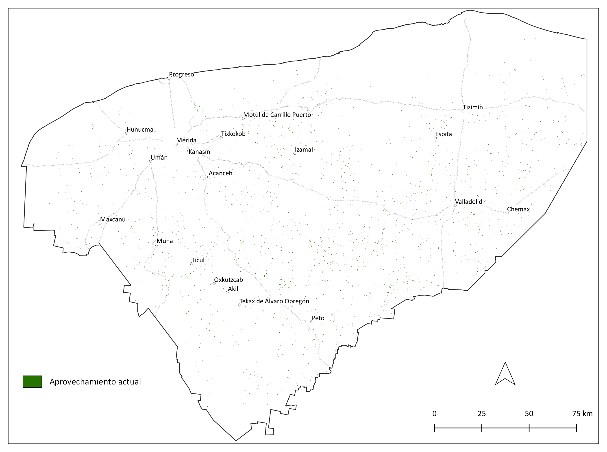
2.3.2 Zona de exclusión¶
Insumos
| Capa | Uso de suelo y vegetación y localidades con 2,500 habitantes o más |
|---|---|
| Fuente | [1] Conjunto de datos vectoriales de la carta de Uso del suelo y vegetación. Serie VI. Conjunto Nacional INEGI, [2] Mapa de uso del suelo y vegetación de la zona costera asociada a los manglares, Región Península de Yucatán CONABIO y [3] Polígonos de localidades. Marco Geoestadístico. Censo de Población y Vivienda INEGI |
| Año | [1] 2017; [2] 2021; [3] 2020 |
| Campo | [1] descripcio; [2] Descrip |
| Escala | [1] 1:250,000; [2] 1:50,000; [3] Sin dato |
| Unidades | Adimensional |
Tabla de exclusión de apicultura
[1]
| ID | Categoría |
|---|---|
| 1 | Acuícola |
| 6 | Cuerpo de agua |
| 16 | Vegetación halófila hidrófila |
| 17 | ND |
[2] Se seleccionaron las localidades con 2,500 habitantes o más.
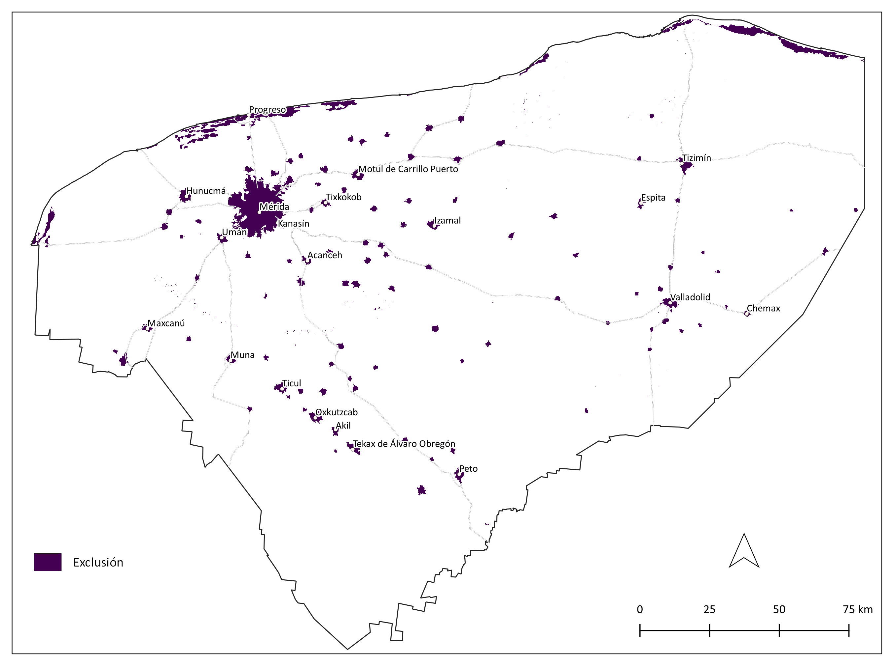
2.3.3 Mapa de aptitud de apicultura¶
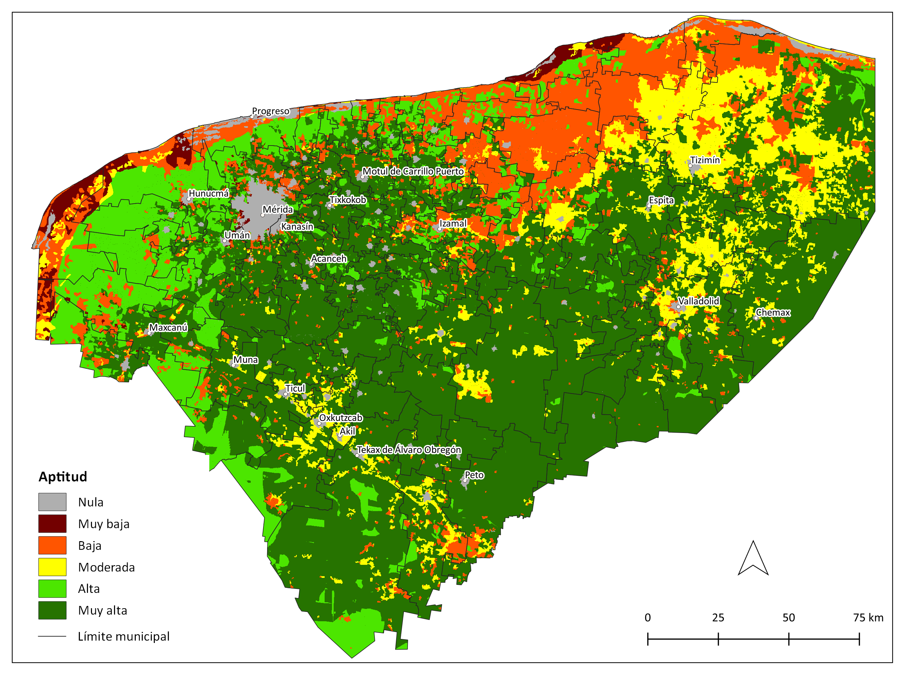
Pesos globales de los atributos ambientales de apicultura
| Criterio | Peso |
|---|---|
| Cobertura | 0.544 |
| Precipitación | 0.136 |
| Tenencia de la tierra | 0.062 |
| Carreteras | 0.059 |
| Veredas | 0.059 |
| Distancia a localidades rurales | 0.055 |
| Distancia a localidades rurales-urbanas | 0.052 |
| Población indígena | 0.021 |
| Distancia a localidades urbanas | 0.012 |
Área por categoría de aptitud
| Categoría | km² | Porcentaje del estado |
|---|---|---|
| Muy alta | 22858.8 | 58 |
| Alta | 4963.4 | 13 |
| Moderada | 5059.2 | 13 |
| Baja | 4656.7 | 12 |
| Muy baja | 527.1 | 1 |
| Nula | 1471.4 | 4 |
2.3.4 Sensibilidad de atributos ambientales de apicultura¶
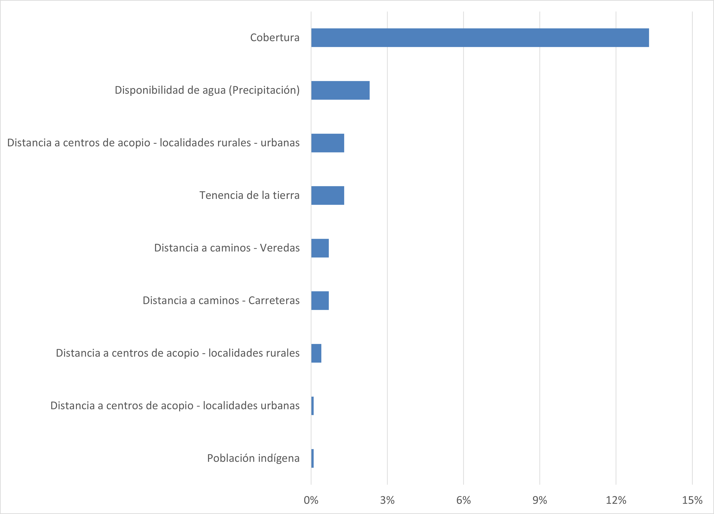
1.2.2 Sociales¶
1.2.2.1 Población indígena¶
Porcentaje de la población que habla una lengua indígena en el municipio.
Insumos
Parámetros de la función de valor
Función de valor de población indígena
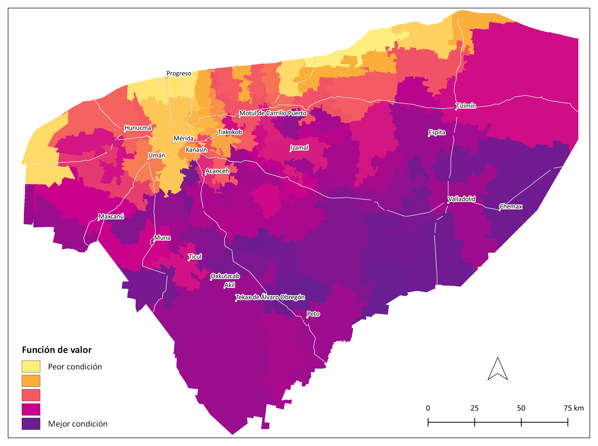
1.2.2.2 Tenencia de la tierra¶
Zonas de área común, parcelas y áreas no ejidales.
Insumos
Parámetros de la función de valor
Función de valor de tenencia de la tierra